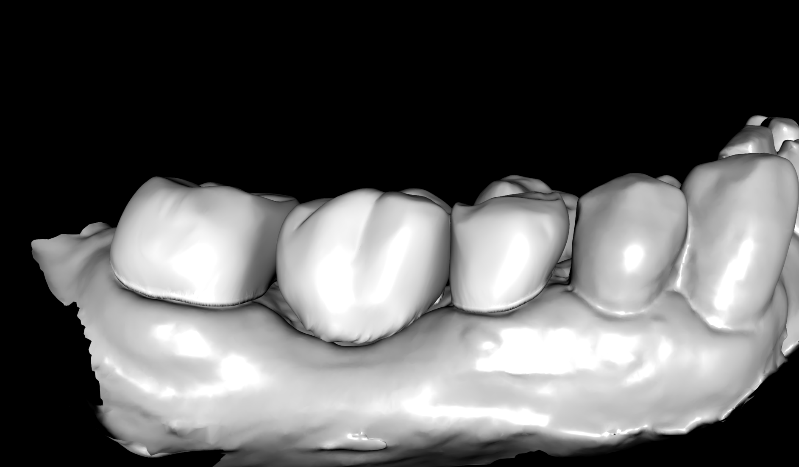
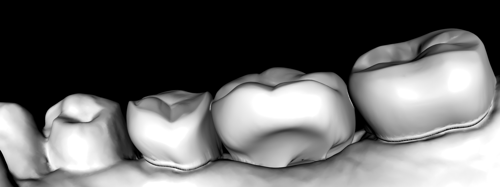

Digital Dental CAD/CAM Specialist & Workflow Architect
Dental graduate specializing in digital pipelines, CAD restoration design, and surgical guide planning.
I architect precise, scalable workflows that bridge clinical intent and production-ready digital dentistry.
Explore PortfolioAbout
My background combines clinical dental anatomy with high-performance digital workflows, allowing me to design restorations and treatment plans with both biological integrity and manufacturing efficiency in mind.
3D Gallery: Indirect Restorations
3 Unit Zirconia Bridge
Occlusal & Intaglio Surface
Buccal Occlusal Relation

Drag left/right to compare
Lingual Intercuspation

Drag left/right to compare
4 Unit Zirconia Bridge
Buccal & Lingual View
Occlusal & Intaglio Surface
Buccal Occlusal Relation


Drag left/right to compare
Lingual Intercuspation


Drag left/right to compare
3 Unit Upper Zirconia Bridge
Buccal Occlusal Relation


Drag left/right to compare
-
Functional Occlusal Alignment — Demonstrates continuous plane of occlusion (Curve of Spee), balanced cervical emergence profiles, and opens embrasure spaces to ensure cleansability and periodontal preservation.
-
Framework Architecture & Margin Fit — Displays marginal integrity along the preparation boundaries, smooth cervical transitions, and an adequate connector height-to-width ratio (≥ 9 mm²) for high-load posterior zones.
Occlusal View


Drag left/right to compare
-
Morphological Precision & Arch Integrity — Highlights central groove alignment along the posterior arch curve, anatomically balanced triangular ridges, and uniform marginal ridge heights adjacent to natural dentition.
Lingual Intercuspation


Drag left/right to compare
-
Cusp-to-Fossa Centric Seating — Confirms positive, stable seating of functional cusps within opposing fossae while preventing lingual overhangs or unphysiological axial contours.
-
Lingual Embrasure Form & Polishing Access — Highlights smooth, rounded connector junctions free of sharp line angles, reducing stress concentration and preventing plaque accumulation.
Capabilities
Indirect Restorations
Precision CAD workflows for inlays, onlays, crowns, and bridges with anatomy-driven design principles.
Digital Smile Design (DSD)
Functional and esthetic planning pipelines for predictable mockups and final restorative outcomes.
Guided Implant Surgery Planning
Prosthetically driven implant positioning, guide design, and surgical workflow optimization.
Workstation & Tech Stack
- CPU: Intel Core Ultra 9
- GPU: NVIDIA GeForce RTX 5070 Ti
- Core Software: exocad, Blue Sky Plan
- Focus: High-throughput digital case planning and design